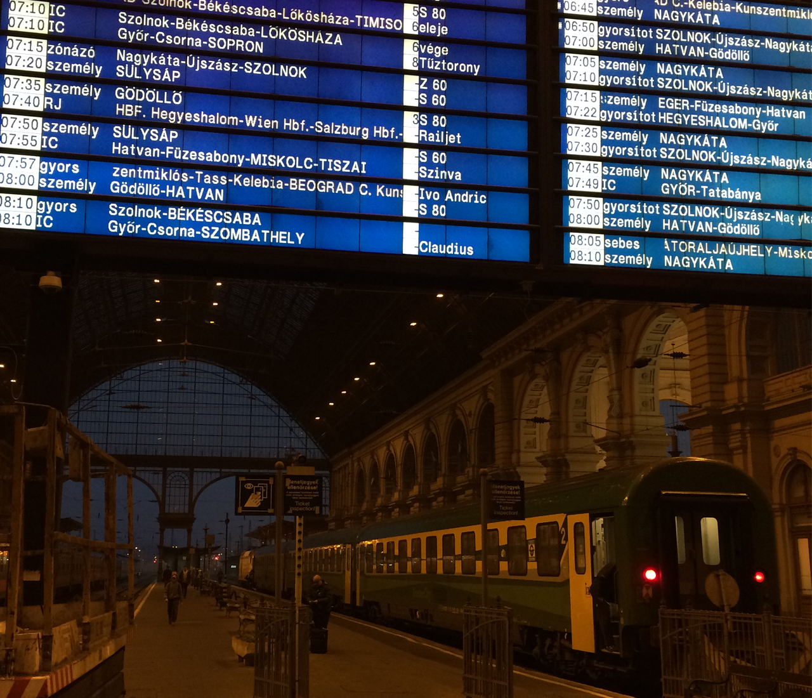
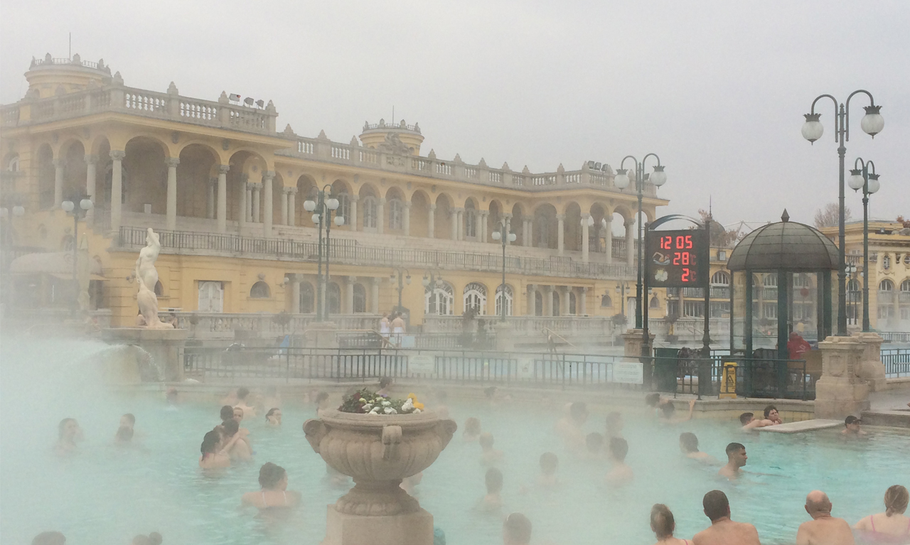
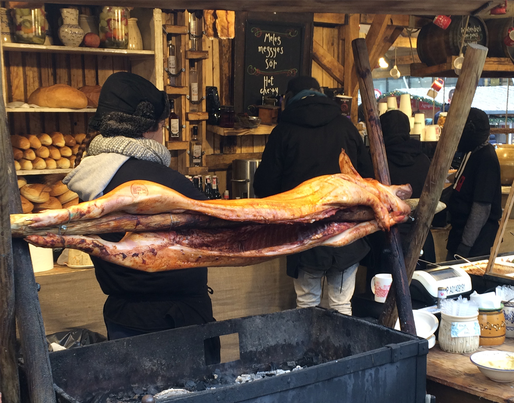
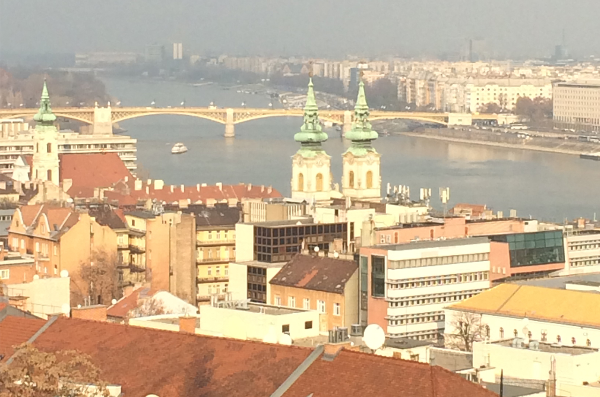
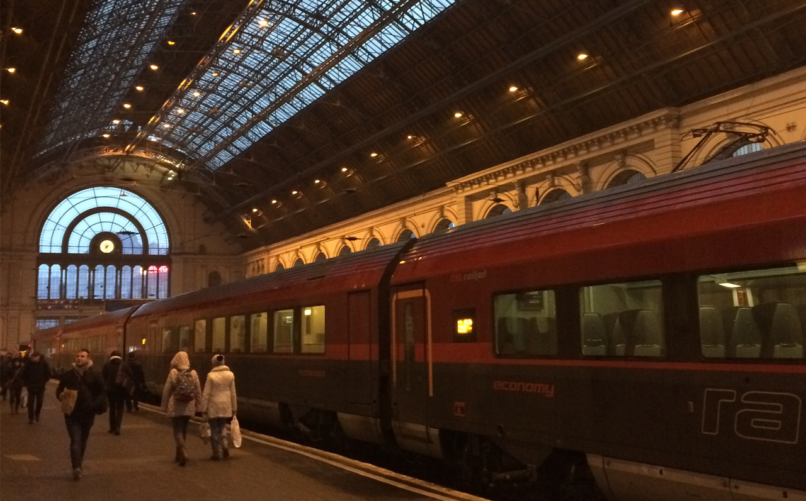

The plan was to fly to Munich and take a 7 hour train to Hungary. After 3 semesters of German, I was confident to stray into foriegn lands where the recognizable alphabet begins to fade.

The Austrian countryside changed from snowy mist to brown fields before arriving at gritty Budapest-Keleti station. Walking through the city, I noticed buildings where delapitated exteriors revealed a Middle Age charm.

Even during Winter, the thermal spas of Széchenyi Bathhouse remain popular with tourists and locals alike. The mineral rich waters are said to have healing powers.

Was kann ich über Straßenessen sagen? Hoffentlich bist du kein Vegetarier.

Just across the Chain Bridge towards Buda Castle is Fisherman's Bastion, a scenic overlook of Parliment and the Danube River.

Und wieder nach München... en route, the conductor found stowaways, three Middle Eastern refugees, hiding in the WC.
For more: Check out the 'Exploring Central Europe' vlog...